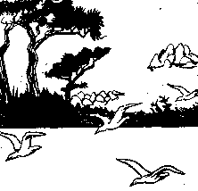

Ar Goulenn
Tonÿ
|
AR BAZHVALAN
1.En anv an Tad oll-galloudeg, Ar Mab hag ar Spered-Meulet (diou wech) . Bennoz ha joa barzh an ti-man Muioc'h eged zo ganin-me. (diou wech) . AR BREUTAER 2 Na petra teus ta, va mignon, Pa ned eo joaouz da galon? AR BAZHVALAN Eur goulmig am-boa em c'houldri Hag eur gudon am-boa ganti, 3. Ha setu digouet ar sparfell Ker prim hag eur barrad avel, Ha ma c'houlmig e-deus spontet, N'ouier doare pelec'h ma aet BREUTAER 4.Meurbet da gavan kempennet Evit be'añ ker glac'haret Kribet az peus da vlev melen, 'Vel ma yefez d'an abadenn AR BAZHVALAN 5.Ma mignon, n'em godiset ket Ma c'houlmig wenn 'peus ket gwelet ? N'em bo, avat, plijadur 'bet, Ken n'am bo ma c'houlmig kavet. AR BREUTAER 6.Da goulmig, n'em eus ket gwelet, Na da gudon wenn kennebeut AR BAZHVALAN 7.Den yaouank, ur gaou a larez, Gwelet eo bet gant re oa maez, Hag o nijal trezek da borzh, Hag o tiskenn barzh da liorzh. AR BREUTAER 8.Da goulmig n'em eus ket gwelet, Na da gudon wenn kennebeut AR BAZHVALAN 9.Ma c'hudon vo kavet marv, Ma na zeu ket he far en-dro ; Mervel a ray ma c'hudon baour : Me ya da welet dre an nor AR BREUTAER 10.Harz ! ma mignon, na yafec'h ket, Me ya ma-unan da welet. D'am liorzh, ma mignon, on bet Na koulmig 'bed n'em eus kavet 11.Nemet ur trapad boukedon, Bleunioù lila ha rozennoù, Ha dreist-holl ur rozennig gaer, Savet e kornig ar voger 12.Me ya d'he c'hlask deoc'h mar karet, Da lakaat laouen ho spered AR BAZHVALAN 13.Bravik feiz ! koant hag a-feson Da lakaat laouen ur galon ! Ma vez ma c'hudon ar c'hlizhenn, Teufe da goue'añ warnezhi. |
14.Me ya da bignat d'ar c'hreunial ;
Marse 'mañ aet di, o nijal AR BREUTAER 15.Chomet, mignon kaer, gorto'et, Me ya ma-unan da welet D'ar c'hreunial d'al laez on bet, Na koulm ebet n'em eus kavet 16.Nemet an dañvouezennig-mañ, Hi chomet war-lec'h he-unan : Lak-hi deus da dog mar karez, Da gaout frealzidigezh. AR BAZHVALAN 17.Kement a c'hreun zo en tañvouezenn, Kel lies evn gant ma c'houlm wenn, Dindan he askell, en he neizh, Hag hi ker goustadig e kreiz. Mont a ran d'ar park da welet.  AR BREUTAER 18. Harz, ma mignon, na yafec'h ket, Saotrañ refec'h ho potoù ler Me ya ma-unan en ho lec'h... Ne gavan koulmig mod ebet 19.Nemet un aval 'meus kavet, 'N aval-mañ, krizet a bell zo, Dindan ar we'enn, 'touez an delioù En ho chakodig lakit-hi, 20.Da reiñ d'ho kudon da zebriñ, Ha neuze na ouelo ket mui. AR BAZHVALAN 21.Ma mignon, ho trugarekat; 'Vit ma krizet, un aval mat Ned eo ket kollet he c'hwezh-vat ; Met n'em eus c'hoant deus aval 'bet, 22.Deus bleuñ na deus tañvoue'enn ebet, Ma c'houlmig renkan da gavet Me ya ma-unan d'he c'herc'het. AR BREUTAER 23.'Trou Doue ! hemañ zo paotr fin ! Deus 'ta, ma mignon, deus ganin Da goulmig wenn n'eo ket kollet, Me ma un' em eus hi miret, 24.Em c'hambr en ur gaout olifant, Ar biri a aour hag arc'hant. Hag hi drevik enni meurbet, Ker probik, ker brav, ker fichet. |
.